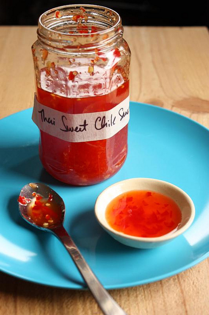

Thai Chile Sauce Recipe

Thai Chile Sauce
This sweet and spicy thai chile sauce will add flavor and spice to any dish that you want to add it too. It pairs well with many thai dishes such as thai grilled chicken, grilled pork steaks and other possibly non thai dishes such as pan seared egg tofu. I hope you enjoy this homemade thai chile sauce recipe
Ingredients
- 1/3 cup coursely chopped cilantro
- 2 cups water
- 3 to 4 tablespoons coursley chopped garlic
- 4 ounces Fresno chile with seeds and coursley chopped
- 1/8 teaspoon of salt
- 2 cups distilled white vinegar
- 1 1/3 cups of sugar
Steps
- Put the cilantro stems and water into a sauce pan. Bring to a simmer and cook for 5 minutes. Remove from the heat and cover. Let steep for 20 minutes
- Meanwhile, use an electric mini chopper to grind the garlic, chiles, and salt to a coarse texture. Set aside.
- Strain the cilantro liquid through a mesh strainer. Measure the liquid. You should have about 1 ¾ cups. Transfer to a saucepan. Add the same quantity of vinegar as you had of the cilantro liquid. Add the sugar and chiles and garlic mixture. Stir.
- Bring to a boil over medium-high heat, then lower the heat to simmer. Let simmer until the volume has reduced by half. (How much time this takes depends on the size of your saucepan. Use a shallow, wide pan to hasten the process.) The resulting sauce should be slightly thick.
- Allow sauce to cool